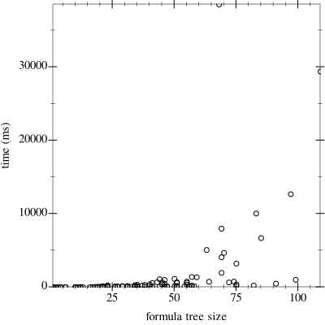
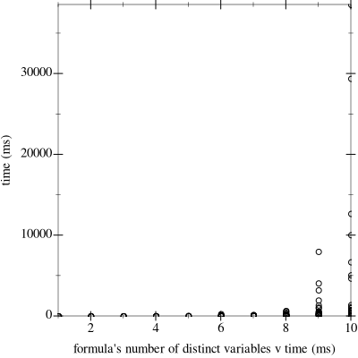

XOR Sat Solving
Satisfiability solving is useful and important, but surprisingly ad-hoc in nature. Rules such as resolution, propagating pure literals, and unit clauses make sense to employ, but it can be unclear when other heuristics are needed. Choosing an order for decision variables is a much studied and unsolved problem. In this paper we propose a SAT procedure with dispenses with all of this as unecessary baggage, and simply treats SAT solving as simple, mechanical multinomial normalization.
1 Introduction
The boolean satifiability problem can be phrased as checking whether a boolean-valued function on n-variables is in fact the constant 0 function. However, the language that we use when solving SAT problems is incongruous with this interpretation, since a given boolean function may be expressible in multiple ways in terms of logical and (∧) and logical or (∨). We see this in the existence of the conjunctive normal form and disjunctive normal forms. But if we were to instead use the algebra of ∧ and xor (⊕), then we would have a one to one relation between boolean functions and expressions. This leads to a simple and elegant algorithm to check whether a quantifier free formula on boolean variables is satisfiable.
To get an idea of why this may be helpful consider the following workflow. Start with a formula with operations ¬, ∧, ∨, ⇒, ⊕, and ⇔, such as (⇒ (x₀ ∧ x₁) (x₀ ∧ x₁)), where x₀ and x₁ are boolean variables. Transform the formula into one with only ∧ and ⊕. Then simplify the resultant multinomial purely via equational laws of the xor algebra. If the final formula is anything but 0, the constant 0 function, then the original formula is satisfiable.
2 Motivation and Background
To write the equational laws, I will write ⊕ as + and ∧ as *, and I will sometimes leave multiplication implicit. We have commutativity and associativity – A+B=B+A, AB=BA, (A+B)+C=A+(B+C), and (AB)C=A(BC). We have top and bottom elements 0 and 1, A*0=0, A*1=A, and AA=A. Multiplication distributes over addition – A(B+C)=AB+AC and (A+B)C=AC+BC. But we had all of this in the ∧/∨ calculus. What is new is additive identity since A+0=A and additive inverses since A+A=0. In other words, we are working over a field with two elements.
What does this buy us? Well first of all it justifies our use of ⊕ as + and ∧ as *. But more importantly it immediately points toward an algorithm for SAT solving. Namely, convert your propositional logic to ⊕/∧ form, and multiply. If the final result is 0, your formula is UNSAT. Anything else is satisfiable, and a result of 1 entails validity.
To transform the formula into xor form, we can derive the following equivalences.
¬ A ⇔ 1+A
A∨ B ⇔ A+B+AB
(A ⇒ B) ⇔ (¬A)∨B ⇔ ¬ A+B+(¬ A)B ⇔ (1+A)+B+(1+A)B ⇔ 1+A+B+B+AB ⇔ 1+A+AB
(A ⇔ B) ⇔ ¬ (A+B) ⇔ 1+A+B
In the Racket programming language:
(define (compile-to-xor formula) (if (symbol? formula) (make-mset (symbol->string formula)) (let ([mset-one (make-mset '((0 . 1)))]) (if (eq? 2 (length formula)) (add mset-one (compile-to-xor (cadr formula))) (let ([x (compile-to-xor (cadr formula))] [y (compile-to-xor (caddr formula))]) (match (car formula) ['¬ (add mset-one x)] ['∧ (mult x y)] ['∨ (add x y (mult x y))] ['⇒ (add mset-one x (mult x y))] ['⊕ (add x y)] ['⇔ (add mset-one x y)]))))))
3 Overview of Proposed Approach
Recall the example x₀ ∧ x₁ ⇒ x₀ ∧ x₁. After translating to xor by recursively applying the rule for implication above, we get 1 + x₀ * x₁ + (x₀ * x₁)*(x₀ * x₁). Then:
1 + x₀ * x₁ + (x₀ * x₁)*(x₀ * x₁)
1 + x₀ * x₁ + x₀ * x₁ by AA=A
1 + 0 by A+A=0
0 by A+0=A
> (require "sat-solver.rkt" "multinomial-reduction-utils.rkt") > (compile-to-xor '(⇒ (∧ v0 v1) (∧ v0 v1))) (multiset (↥ (multiset)))
> (view-multinomial (compile-to-xor '(⇒ (∧ v0 v1) (∧ v0 v1)))) "1"
Note that compile-to-xor does not output 1, but rather a nested multiset. We use an internal representation of multinomials that more directly reflects their equivalences due to their equational laws. (Explaining the multiset representation is a bit involved though rewarding – it will not fit in page count. Please view https://github.com/scottviteri/XORSatSolver/multinomial-reduction.html if interested. Even better, it is meant to be viewed after pulling locally and running "scribble –html multinomial-reduction.rkt", because then you will also get the formatting.)
We have not only shown that the original formula is satisfiable, but also that it is the constant 1 function, or valid!
4 Evaluation Methodology
I evaluated the procedure on a combination of hand-crafted and automatically generated formulas. The automatically generated formulas are created by picking a probability of growing a formula leaf, and also picking a rate at which that probability decays.
(define (generate-formula prob-expansion decay num-vars) (define (generate-random-tree prob-of-expansion decay) (define (sample-list lst) (list-ref lst (random (length lst)))) (define (generate-random-tree-aux prob-of-expansion) (if (> (random) prob-of-expansion) 'x (let ((bin-op (sample-list '(∧ ∨ ⇒)))) (list bin-op (generate-random-tree-aux (* decay prob-of-expansion)) (generate-random-tree-aux (* decay prob-of-expansion)))))) (generate-random-tree-aux prob-of-expansion)) (define (generate-formula-aux formula-tree) (if (leaf? formula-tree) (if (equal? 0 (random 2)) (string->symbol (string-append "v" (number->string (+ 1 (random num-vars))))) (list '¬ (string->symbol (string-append "v" (number->string (+ 1 (random num-vars))))))) (list (car formula-tree) (generate-formula-aux (cadr formula-tree)) (generate-formula-aux (caddr formula-tree))))) (let ((formula-tree (generate-random-tree prob-expansion decay))) (generate-formula-aux formula-tree)))
5 Results
5.1 Manually Generated
> (view-multinomial (compile-to-xor ’(⇒ (∧ v0 v1) (∧ v0 v1))))
"1"
> (view-multinomial (compile-to-xor ’(⇒ (∧ v0 v1) (¬ (∧ v0 v1)))))
"1 + v0*v1"
> (view-multinomial (compile-to-xor ’(∧ (∧ v0 v1) (¬ (∧ v0 v1)))))
"0"
> (view-multinomial (compile-to-xor ’(∧ v100 v100)))
"v100"
> (view-multinomial (compile-to-xor ’(⇒ v100 v100)))
"1"
> (view-multinomial (compile-to-xor ’(⇔ v1 v2)))
"1 + v1 + v2"
5.2 Algorithmically Generated
 
This SAT solver is in the grand scheme of things quite slow. That said, I have done zero optimizations, and it is very possible that I am converting from the general multinomial case to the boolean multinomial case in a suboptimal way. I also have not yet experimented with term sharing techniques on the nested multinomial representation. There may also be optimizations that I can make because we are only looking for satisfiability, as opposed to knowing exactly which boolean function a boolean multinomial is equivalent to, in general. For all I know, there are moves that we can make that are analogous to gradient descent.
6 Conclusion
What is the point of a new approach to SAT solving? Isn’t the question more or less solved, and further approaches are relegated to bit twiddling? Am I really expecting to beat out the mature state-of-the-art solvers?
No, well maybe, but that is also not really the point. This project has helped me understand what SAT solving IS, not what it happens to be. Yes, this may be or lead to the fewest LOC of any existing solver. This is closer to the point, but still not exactly it.
As far as I can tell this is open field research. There is no pre-existing work, and it is difficult for me to predict the discoveries that I will make in advance. In other words, it is great fun.
7 Acknowledgements
Norman Wildberger is originally responsible for both the ideas of SAT solving with xor’s, and of representing polynomials as multisets. My contribution is implementation of both, as well as discovery and implementation of the representation’s extension to the multinomial case.